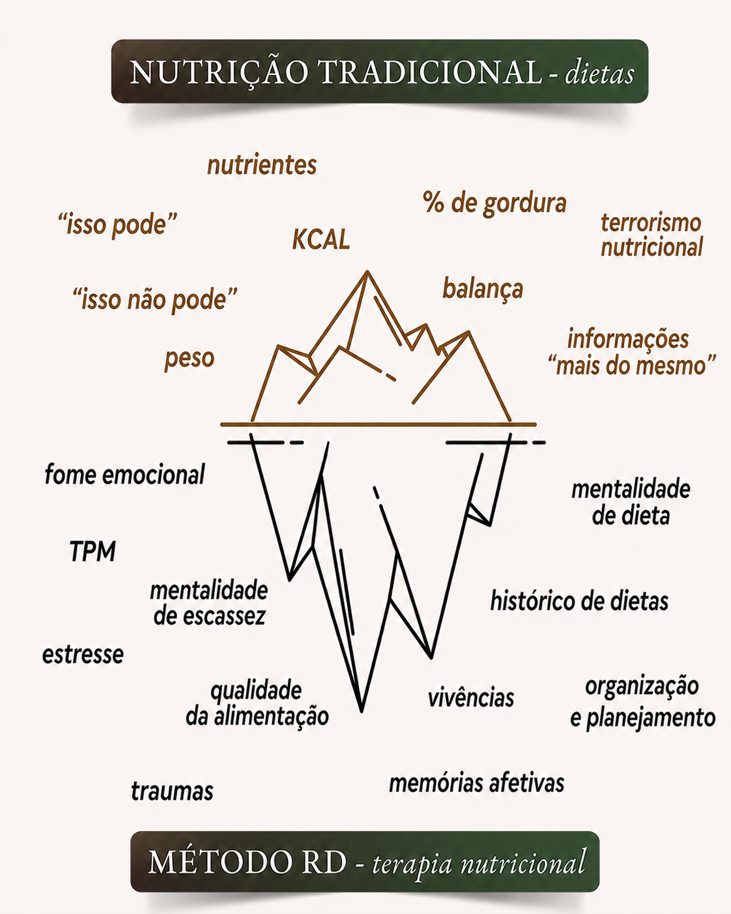

Rasgando a Dieta
Liberte-se de vez dos comportamentos que sabotam seu emagrecimento definitivo.
QUERO SABER MAIS!
Pra você que já tentou de tudo para emagrecer (dieta/medicamentos/procedimentos cirúrgicos).
Pra você que não tem controle com a comida.
Pra você que inicia o dia se prometendo que vai ser diferente e vai dormir frustrada.
Pra você que vive no efeito sanfona.
Pra você que desconta suas emoções na comida.
Pra você que vive se prometendo "é a última vez!"
Pra você que não aguenta mais fazer dieta.
Antes de te passar qualquer informação, eu preciso entender quais são suas dificuldades/objetivos, o que já tentou e como poderei te ajudar. Essa primeira etapa acontece no WhatsApp e é parte do processo. É nessa conversa que montarei seu plano de ação.
Após montar plano de ação, damos início a ele. As consultas acontecem de 15 em 15 dias. Em cada consulta será trabalhado o que está te atrapalhando a alcançar seu sonho.
Não trabalho com consultas avulsas e sim com um acompanhamento. Com início - meio - fim.
Emagrecimento sem dieta não significa sem esforço e comprometimento.
A qualidade da sua alimentação não será deixada de lado. Ela faz parte do processo.
O déficit calórico acontece mesmo não fazendo dieta. (veja os depoimentos!)
Liberte-se dos comportamentos que sabotam seu emagrecimento e descubra um método mais leve, consciente e definitivo.
FALE COMIGO PELO WHATSAPPVamos conversar sobre o método RD
natalia
(11) 99999-9999
contato@natalia.com
Juiz de Fora - MG